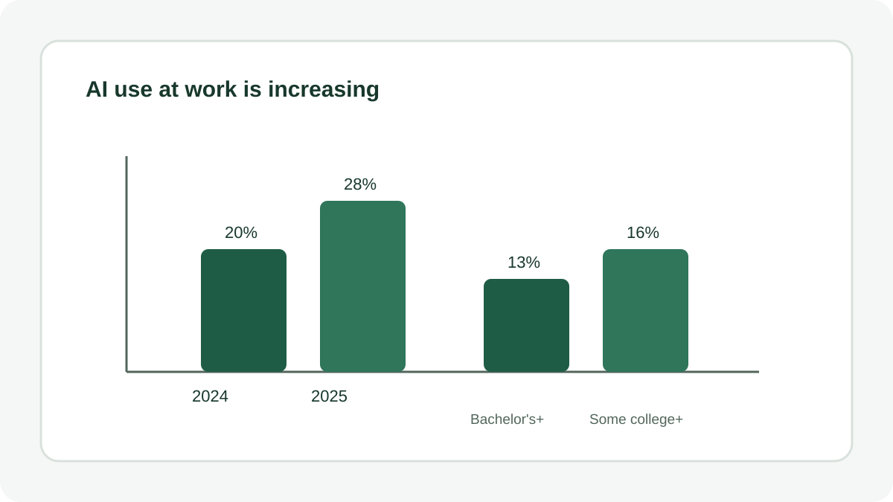
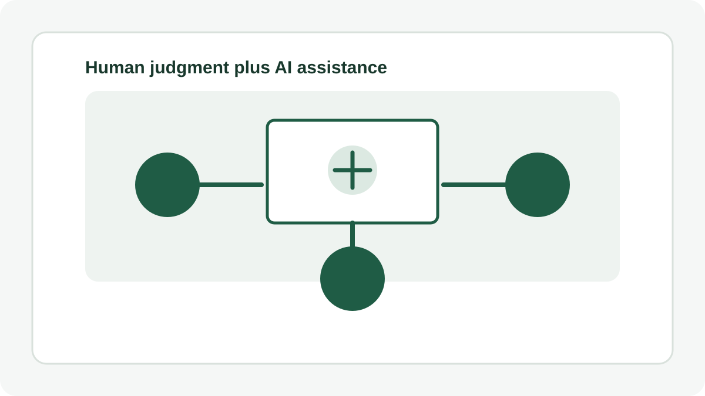

If you have felt a low hum of uncertainty about your job lately, you are not imagining it. Something in the way work gets done has genuinely shifted, and it is happening faster than many workplace policies can keep up with.
This is not another argument that AI will either take every job or save every career. The more useful question is what is already changing, what the evidence says about the direction of work, and what workers can do now to remain adaptable.
Where AI Has Already Landed in the Workplace
Start with what is happening today rather than predictions about a distant future. Pew Research Center reported in September 2025 that 21% of U.S. workers said at least some of their work was being done with AI, up from 16% a year earlier. Only 2% said AI handled all or most of their work, the same share reported in 2024.
That distinction matters. Most workers are not being replaced by AI overnight. At the same time, adoption is not evenly distributed. Workers with a bachelor's degree or higher reported AI use rising from 20% to 28% in one year, while workers with some college education or less moved from 13% to 16%.
About 65% of workers still said they did not use AI much or at all in their jobs. That gap between early adopters and people who have barely used these tools may become one of the defining workplace differences of the next few years.

The Jobs Being Created and the Jobs Being Lost
The World Economic Forum's Future of Jobs Report 2025 provides a broad global view. Based on a survey of more than 1,000 employers representing more than 14 million workers across 55 economies, the report projects that 92 million jobs could be displaced by 2030 while 170 million new roles could be created. The difference is a projected net gain of 78 million jobs.
Those numbers should not be interpreted as a guarantee that every displaced worker will move smoothly into a new role. They describe labor market churn. Some occupations will shrink, others will grow, and many existing jobs will change substantially as technology alters the tasks inside them.
The same report says 86% of employers expect AI and information processing technologies to be significant drivers of business transformation in the coming years. That makes AI adoption more than a technology department issue. It is increasingly connected to hiring, training, operations and business strategy.
Which Skills Are Actually Rising?
If you are deciding where to invest your learning time, the WEF report offers a useful starting point. Among the fastest growing skill areas are:
- AI and big data literacy
- Networks and cybersecurity
- General technological literacy
- Creative thinking
- Resilience, flexibility and agility
- Curiosity and lifelong learning
The mix is important. Not every valuable skill is technical. Employers need people who can use technology, but they also need people who can frame problems, communicate clearly, adapt to new processes and make sound decisions when the available information is incomplete.
The WEF also projects that 39% of workers' existing skill sets will be transformed or become outdated by 2030. That figure was 44% in its 2023 report. The lower projection does not remove the need for learning. It reinforces the idea that skills development is becoming an ongoing part of work rather than something that ends with formal education.
Why So Many Workers Feel Uneasy About AI
The workplace transition is not only an economic story. It is also a personal one. Pew research found that 52% of U.S. workers felt worried about the future impact of AI in the workplace, while 36% said they felt hopeful. About 33% described themselves as overwhelmed and 29% said they felt excited.
Those reactions can exist at the same time. A worker can be interested in what AI makes possible and still be concerned about how automation could affect a role, income or career path. The uncertainty is reasonable because the technology is changing while organizations are still working out how to use it responsibly.
Pew also found differences in how workers viewed their own opportunities. About 32% thought AI would lead to fewer opportunities for them personally. The share was lower among workers with postgraduate education and higher among workers with a bachelor's degree. Education is not a guarantee of job security, but the differences suggest that access to training and opportunities to build new skills may influence how workers experience the transition.
The Skills AI Still Cannot Replace Easily
It is useful to be specific about what AI systems do well. They can be effective at pattern recognition, drafting, summarizing, classification and repetitive cognitive tasks. But workplace decisions often involve context, competing priorities, relationships, ethical considerations and accountability.
Consider a manager deciding how to respond to a customer complaint. An AI system may help summarize the complaint and suggest possible responses. The manager still has to understand the relationship, consider company policy, judge the seriousness of the situation and take responsibility for the final decision.
The durable advantage is therefore not simply knowing something AI cannot do. It is combining technology fluency with judgment, subject knowledge, communication and accountability.

How to Position Yourself for What Comes Next
Get Fluent, Not Just Aware
There is a major difference between knowing that AI tools exist and being able to use relevant tools effectively. Pew reported that only 24% of workers who had received job training during the previous year said the training was related to AI. Separate research from Microsoft and LinkedIn found that only 39% of employees globally who use AI at work had received formal training on it.
That creates an opportunity. You do not need to master every new AI product. Start with the tools that are relevant to your actual work. Learn what they are good at, where they make mistakes, how to verify their outputs and how to incorporate them into a repeatable workflow.
Build Skills That Are Growing, Not Shrinking
AI and data literacy are useful, but they should not become your entire development plan. Creative thinking, adaptability, communication, problem solving and continuous learning are also valuable because they help you respond when the technology changes.
A narrow skill can become outdated. The ability to learn a new skill quickly is more durable.
Watch Where AI Agents Are Heading
The next stage of AI adoption is moving beyond systems that simply answer prompts. AI agents are designed to complete multi step tasks with less direct supervision. Recent WEF research on AI agent adoption found that 82% of executives planned to adopt AI agents within the next one to three years.
As these systems become more capable, organizations will need people who understand how to set goals, monitor outputs, manage access, handle exceptions and decide when human intervention is required. That creates opportunities around AI operations, workflow design, quality assurance and governance.
Talk to Your Employer Before They Talk to You
If your organization has not clearly explained its AI plans, asking questions can be a practical career move. Find out which tools are being considered, what training is available and whether parts of your role are likely to change.
The purpose is not to create unnecessary alarm. It is to understand where your work is heading early enough to participate in the transition.
What This Means Going Forward
The honest version of the AI workplace story is less dramatic than many headlines suggest. AI is not sweeping through every workplace at the same speed, and it is not sitting quietly in the background either. Adoption is uneven across industries, occupations and groups of workers.
That unevenness is exactly why staying informed matters more than staying anxious. The workers and organizations that adapt well are likely to be the ones that pay attention early, develop relevant skills deliberately and treat AI as a technology that requires both experimentation and judgment.
Conclusion
You do not need to become an AI expert overnight. You need to understand the tools that matter in your field, build skills that remain useful as technology changes, verify important outputs and take part in conversations about how your work is evolving.
Takeaway: The most practical response to workplace AI is not panic or blind enthusiasm. Stay curious, keep your skills moving in the direction the evidence points to, and start the conversation before important decisions about your role are made without your input.